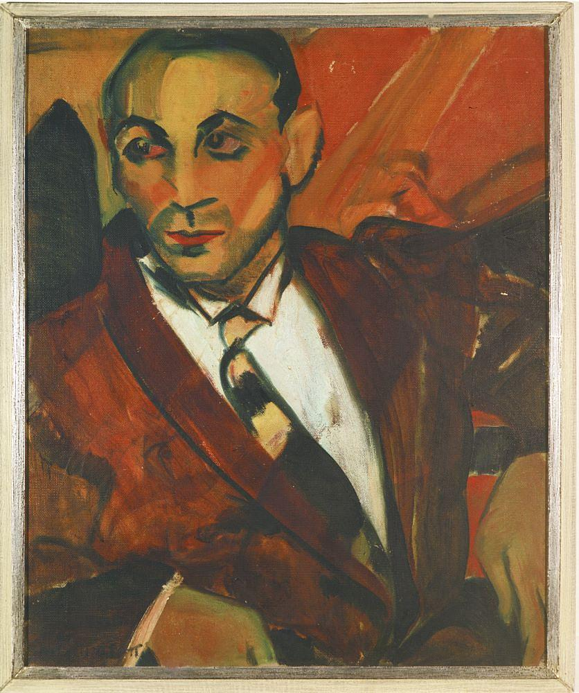

Uso da Cor
A pele amarela vibrante rompe com o academicismo e transmite a carga psicológica do personagem.
Pioneira do Modernismo brasileiro e revolucionária da arte expressionista no Brasil.
Pintado durante a temporada de estudos de Anita Malfatti em Nova York, O Homem Amarelo é uma das obras mais emblemáticas da arte moderna brasileira.
A tela retrata um imigrante com um olhar melancólico e resignado, capturando a essência humana através de cores vibrantes e pinceladas vigorosas.
Entenda o que faz desta obra um marco divisor de águas na nossa história da arte.
A pele amarela vibrante rompe com o academicismo e transmite a carga psicológica do personagem.
Os traços largos e marcados no fundo verde e no traje azul dão ritmo e movimento à composição.
O olhar distante do retratado reflete solidão, cansaço e a condição do imigrante urbano.
Ajustes entre o amarelo quente e os tons frios de azul e verde criam uma tensão visual única.

A exibição da obra chocou a crítica conservadora da época e pavimentou o caminho para a Semana de Arte Moderna de 1922.
Desafiou os padrões rígidos da pintura tradicional vigentes no Brasil do início do século XX.
A dura crítica no artigo "Paranoia ou Mystificação?" gerou forte reação dos jovens artistas modernistas.
A defesa de Anita reuniu nomes como Mário de Andrade, Oswald de Andrade e Di Cavalcanti.
A pintura original integra hoje a coleção do Instituto de Estudos Brasileiros (IEB/USP).
Anita Malfatti transformou a arte brasileira ao colocar a subjetividade e a emoção acima da mera reprodução da realidade.